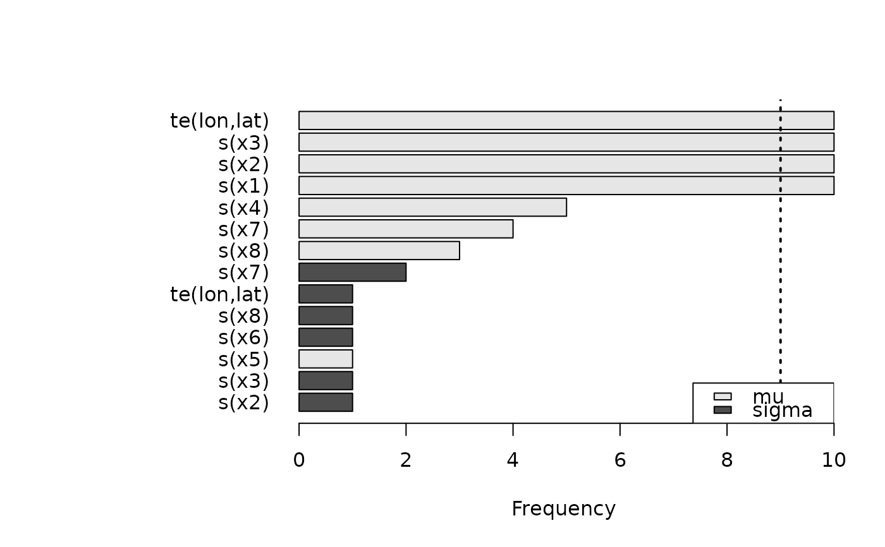
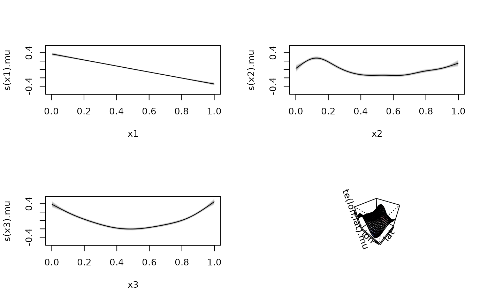

stabsel.RdPerforms stability selection based on gradient boosting.
stabsel(formula, data, family = "gaussian",
q, maxit, B = 100, thr = .9, fraction = 0.5, seed = NULL, ...)
## Plot selection frequencies.
# S3 method for stabsel
plot(x, show = NULL,
pal = function(n) gray.colors(n, start = 0.9, end = 0.3), ...)A formula or extended formula.
A data.frame.
A bamlss.family object.
An integer specifying how many terms to select in each boosting run.
An integer specifying the maximum number of boosting iterations.
See opt_boost. Either choose q or maxit as hyper-parameter
for regularization.
An integer. The boosting is run B times.
Cut-off threshold of relative frequencies (between 0 and 1) for selection.
Numeric between 0 and 1. The fraction of data to be used in each boosting run.
A seed to be set before the stability selection.
A object of class stabsel.
Number of terms to be shown.
Color palette for different model terms.
Not used yet in stabsel.
A object of class stabsel.
stabsel performs stability selection based on gradient
boosting (opt_boost): The boosting algorithm is run
B times on a randomly drawn fraction of the data.
Each boosting run is stopped either when q terms have been selected,
or when maxit iterations have been performed, i.e. either q
or maxit can be used to tune the regularization of the boosting.
After the boosting the relative selection frequencies are evaluated.
Terms with a relative selection frequency larger then thr
are suggested for a final regression model.
If neither q nor maxit has been specified, q
will be set to the square root of the number of columns in data.
Gradient boosting does not depend on random numbers. Thus, the individual boosting runs differ only in the subset of data which is used.
if (FALSE) ## Simulate some data.
set.seed(111)
d <- GAMart()
n <- nrow(d)
## Add some noise variables.
for(i in 4:9)
d[[paste0("x",i)]] <- rnorm(n)
f <- paste0("~ ", paste("s(x", 1:9, ")", collapse = "+", sep = ""))
f <- paste(f, "+ te(lon,lat)")
f <- as.formula(f)
f <- list(update(f, num ~ .), f)
## Run stability selection.
sel <- stabsel(f, data = d, q = 6, B = 10)
#> Stability selection boosting run 1 / 10
#> logLik -91.1360 eps 0.0489 iteration 2 qsel 1
#> logLik -84.6535 eps 0.0482 iteration 3 qsel 2
#> logLik -79.0965 eps 0.0483 iteration 4 qsel 2
#> logLik -73.9424 eps 0.0467 iteration 5 qsel 2
#> logLik -69.5280 eps 0.0543 iteration 6 qsel 2
#> logLik -65.4274 eps 0.0535 iteration 7 qsel 2
#> logLik -61.5805 eps 0.0707 iteration 8 qsel 3
#> logLik -58.1065 eps 0.1579 iteration 9 qsel 3
#> logLik -54.9461 eps 0.1679 iteration 10 qsel 3
#> logLik -51.9046 eps 0.0701 iteration 11 qsel 3
#> logLik -49.1672 eps 0.1395 iteration 12 qsel 3
#> logLik -46.7298 eps 0.1434 iteration 13 qsel 3
#> logLik -44.1116 eps 0.0125 iteration 14 qsel 3
#> logLik -41.5650 eps 0.1403 iteration 15 qsel 3
#> logLik -39.1162 eps 0.0118 iteration 16 qsel 3
#> logLik -36.7201 eps 0.1399 iteration 17 qsel 3
#> logLik -34.4414 eps 0.0111 iteration 18 qsel 3
#> logLik -32.2490 eps 0.1111 iteration 19 qsel 3
#> logLik -30.0031 eps 0.0933 iteration 20 qsel 3
#> logLik -27.6596 eps 0.0110 iteration 21 qsel 3
#> logLik -25.5705 eps 0.1000 iteration 22 qsel 3
#> logLik -23.4191 eps 0.0103 iteration 23 qsel 3
#> logLik -21.5527 eps 0.0564 iteration 24 qsel 3
#> logLik -19.5663 eps 0.0815 iteration 25 qsel 3
#> logLik -17.4072 eps 0.0101 iteration 26 qsel 3
#> logLik -15.5906 eps 0.0650 iteration 27 qsel 3
#> logLik -11.5001 eps 0.1160 iteration 28 qsel 4
#> logLik -9.1111 eps 0.0104 iteration 29 qsel 4
#> logLik -7.1328 eps 0.0092 iteration 30 qsel 4
#> logLik -5.4949 eps 0.0403 iteration 31 qsel 4
#> logLik -3.7123 eps 0.0085 iteration 32 qsel 4
#> logLik -2.0768 eps 0.0523 iteration 33 qsel 4
#> logLik -0.2310 eps 0.0398 iteration 34 qsel 4
#> logLik 3.7641 eps 0.0889 iteration 35 qsel 4
#> logLik 5.9334 eps 0.0093 iteration 36 qsel 4
#> logLik 7.7278 eps 0.0083 iteration 37 qsel 4
#> logLik 9.2093 eps 0.0073 iteration 38 qsel 4
#> logLik 10.6936 eps 0.0315 iteration 39 qsel 4
#> logLik 12.1433 eps 0.0380 iteration 40 qsel 4
#> logLik 13.7929 eps 0.0385 iteration 41 qsel 4
#> logLik 17.5703 eps 0.0761 iteration 42 qsel 4
#> logLik 19.5028 eps 0.0083 iteration 43 qsel 4
#> logLik 21.0994 eps 0.0074 iteration 44 qsel 4
#> logLik 22.4161 eps 0.0066 iteration 45 qsel 4
#> logLik 23.6988 eps 0.0590 iteration 46 qsel 4
#> logLik 24.9781 eps 0.0252 iteration 47 qsel 4
#> logLik 26.4580 eps 0.0387 iteration 48 qsel 4
#> logLik 29.9356 eps 0.0554 iteration 49 qsel 4
#> logLik 31.6094 eps 0.0074 iteration 50 qsel 4
#> logLik 32.9903 eps 0.0065 iteration 51 qsel 4
#> logLik 34.1277 eps 0.0058 iteration 52 qsel 4
#> logLik 35.2651 eps 0.0306 iteration 53 qsel 4
#> logLik 36.3514 eps 0.0220 iteration 54 qsel 4
#> logLik 39.5229 eps 0.0413 iteration 55 qsel 4
#> logLik 40.8330 eps 0.0062 iteration 56 qsel 4
#> logLik 42.1842 eps 0.0559 iteration 57 qsel 4
#> logLik 43.3571 eps 0.0058 iteration 58 qsel 4
#> logLik 44.3219 eps 0.0051 iteration 59 qsel 4
#> logLik 45.3100 eps 0.0231 iteration 60 qsel 4
#> logLik 46.2369 eps 0.0232 iteration 61 qsel 4
#> logLik 49.0557 eps 0.4233 iteration 62 qsel 4
#> logLik 50.2425 eps 0.0231 iteration 63 qsel 4
#> logLik 51.4143 eps 0.0056 iteration 64 qsel 4
#> logLik 52.4106 eps 0.0235 iteration 65 qsel 5
#> logLik 53.4391 eps 0.0052 iteration 66 qsel 5
#> logLik 54.2843 eps 0.0046 iteration 67 qsel 5
#> logLik 55.1274 eps 0.0195 iteration 68 qsel 5
#> logLik 55.9331 eps 0.0274 iteration 69 qsel 5
#> logLik 58.3906 eps 0.3346 iteration 70 qsel 5
#> logLik 59.3200 eps 0.0048 iteration 71 qsel 5
#> logLik 60.2077 eps 0.0253 iteration 72 qsel 5
#> logLik 61.3236 eps 0.0287 iteration 73 qsel 5
#> logLik 62.2029 eps 0.0046 iteration 74 qsel 5
#> logLik 62.9247 eps 0.0041 iteration 75 qsel 5
#> logLik 63.7913 eps 0.0037 iteration 76 qsel 6
#>
#> elapsed time: 1.04sec
#> Stability selection boosting run 2 / 10
#> logLik -80.3632 eps 0.0475 iteration 2 qsel 1
#> logLik -74.7478 eps 0.0456 iteration 3 qsel 2
#> logLik -69.3719 eps 0.0470 iteration 4 qsel 2
#> logLik -64.8157 eps 0.0444 iteration 5 qsel 2
#> logLik -60.4588 eps 0.0535 iteration 6 qsel 2
#> logLik -56.7592 eps 0.1273 iteration 7 qsel 2
#> logLik -53.2266 eps 0.2305 iteration 8 qsel 2
#> logLik -49.6410 eps 0.0668 iteration 9 qsel 3
#> logLik -46.6885 eps 0.0661 iteration 10 qsel 3
#> logLik -43.8510 eps 0.5497 iteration 11 qsel 3
#> logLik -40.9766 eps 0.1932 iteration 12 qsel 3
#> logLik -38.6171 eps 0.1053 iteration 13 qsel 3
#> logLik -36.3368 eps 0.1802 iteration 14 qsel 3
#> logLik -33.8059 eps 0.0118 iteration 15 qsel 3
#> logLik -31.3716 eps 0.1692 iteration 16 qsel 3
#> logLik -29.0146 eps 0.0111 iteration 17 qsel 3
#> logLik -26.9232 eps 0.0921 iteration 18 qsel 3
#> logLik -24.7595 eps 0.0103 iteration 19 qsel 3
#> logLik -22.6304 eps 0.0924 iteration 20 qsel 3
#> logLik -20.4652 eps 0.4408 iteration 21 qsel 3
#> logLik -18.2478 eps 0.0103 iteration 22 qsel 3
#> logLik -16.4020 eps 0.2331 iteration 23 qsel 3
#> logLik -14.3878 eps 0.0095 iteration 24 qsel 3
#> logLik -12.5063 eps 0.0740 iteration 25 qsel 3
#> logLik -10.5798 eps 0.1350 iteration 26 qsel 3
#> logLik -8.5551 eps 0.0094 iteration 27 qsel 3
#> logLik -6.8815 eps 0.0083 iteration 28 qsel 3
#> logLik -5.1876 eps 0.0417 iteration 29 qsel 3
#> logLik -3.5352 eps 0.0654 iteration 30 qsel 3
#> logLik -1.8252 eps 0.0546 iteration 31 qsel 3
#> logLik -0.0081 eps 0.0085 iteration 32 qsel 3
#> logLik 1.4923 eps 0.0076 iteration 33 qsel 3
#> logLik 2.9731 eps 0.0369 iteration 34 qsel 3
#> logLik 4.4176 eps 0.1746 iteration 35 qsel 3
#> logLik 7.9586 eps 0.0527 iteration 36 qsel 4
#> logLik 9.7315 eps 0.0082 iteration 37 qsel 4
#> logLik 11.3330 eps 0.2307 iteration 38 qsel 4
#> logLik 12.9314 eps 0.0076 iteration 39 qsel 4
#> logLik 14.2495 eps 0.0067 iteration 40 qsel 4
#> logLik 15.5877 eps 0.0958 iteration 41 qsel 4
#> logLik 19.0650 eps 0.0496 iteration 42 qsel 4
#> logLik 20.5101 eps 0.0070 iteration 43 qsel 4
#> logLik 21.8693 eps 0.0295 iteration 44 qsel 4
#> logLik 23.3689 eps 0.0817 iteration 45 qsel 4
#> logLik 26.4466 eps 0.0380 iteration 46 qsel 4
#> logLik 28.1146 eps 0.0074 iteration 47 qsel 4
#> logLik 29.4907 eps 0.0066 iteration 48 qsel 4
#> logLik 30.7006 eps 0.0281 iteration 49 qsel 4
#> logLik 31.9208 eps 0.0061 iteration 50 qsel 4
#> logLik 33.1434 eps 0.0257 iteration 51 qsel 4
#> logLik 34.5585 eps 0.0313 iteration 52 qsel 4
#> logLik 37.4814 eps 0.0316 iteration 53 qsel 4
#> logLik 38.8885 eps 0.0065 iteration 54 qsel 4
#> logLik 40.0476 eps 0.0058 iteration 55 qsel 4
#> logLik 41.1390 eps 0.0260 iteration 56 qsel 4
#> logLik 42.1927 eps 0.0241 iteration 57 qsel 4
#> logLik 43.4859 eps 0.0309 iteration 58 qsel 4
#> logLik 46.1254 eps 0.0326 iteration 59 qsel 4
#> logLik 47.5110 eps 0.0063 iteration 60 qsel 4
#> logLik 48.6522 eps 0.0056 iteration 61 qsel 4
#> logLik 49.6067 eps 0.0239 iteration 62 qsel 4
#> logLik 50.6061 eps 0.0052 iteration 63 qsel 4
#> logLik 51.5415 eps 0.0185 iteration 64 qsel 4
#> logLik 52.7711 eps 0.0284 iteration 65 qsel 4
#> logLik 55.2173 eps 0.0791 iteration 66 qsel 4
#> logLik 56.3320 eps 0.0054 iteration 67 qsel 4
#> logLik 57.2484 eps 0.0048 iteration 68 qsel 4
#> logLik 58.1062 eps 0.0312 iteration 69 qsel 4
#> logLik 58.9068 eps 0.0044 iteration 70 qsel 4
#> logLik 59.7273 eps 0.0369 iteration 71 qsel 4
#> logLik 60.8925 eps 0.0388 iteration 72 qsel 4
#> logLik 63.1308 eps 0.0432 iteration 73 qsel 4
#> logLik 64.0238 eps 0.0047 iteration 74 qsel 4
#> logLik 64.7695 eps 0.0240 iteration 75 qsel 4
#> logLik 65.8305 eps 0.0388 iteration 76 qsel 4
#> logLik 66.6655 eps 0.0045 iteration 77 qsel 4
#> logLik 67.3506 eps 0.0040 iteration 78 qsel 4
#> logLik 68.0517 eps 0.0177 iteration 79 qsel 4
#> logLik 70.0872 eps 0.0331 iteration 80 qsel 4
#> logLik 70.7847 eps 0.0040 iteration 81 qsel 4
#> logLik 71.4503 eps 0.9735 iteration 82 qsel 4
#> logLik 72.4559 eps 0.0252 iteration 83 qsel 4
#> logLik 74.2106 eps 0.0287 iteration 84 qsel 4
#> logLik 74.9570 eps 0.0041 iteration 85 qsel 4
#> logLik 75.5689 eps 0.0036 iteration 86 qsel 4
#> logLik 76.2917 eps 0.0035 iteration 87 qsel 5
#> logLik 76.9024 eps 0.0294 iteration 88 qsel 5
#> logLik 77.4767 eps 0.0236 iteration 89 qsel 5
#> logLik 78.3741 eps 0.0236 iteration 90 qsel 5
#> logLik 79.9106 eps 0.0267 iteration 91 qsel 5
#> logLik 80.6226 eps 0.0039 iteration 92 qsel 5
#> logLik 81.2061 eps 0.0035 iteration 93 qsel 5
#> logLik 81.7195 eps 0.0175 iteration 94 qsel 5
#> logLik 82.2213 eps 0.0147 iteration 95 qsel 5
#> logLik 83.0500 eps 0.9193 iteration 96 qsel 5
#> logLik 84.4192 eps 0.0267 iteration 97 qsel 5
#> logLik 85.0451 eps 0.0036 iteration 98 qsel 5
#> logLik 85.5578 eps 0.0032 iteration 99 qsel 5
#> logLik 86.1915 eps 0.0032 iteration 100 qsel 5
#> logLik 86.6365 eps 0.0030 iteration 101 qsel 5
#> logLik 87.1656 eps 0.0029 iteration 102 qsel 5
#> logLik 87.6219 eps 0.0024 iteration 103 qsel 6
#>
#> elapsed time: 1.72sec
#> Stability selection boosting run 3 / 10
#> logLik -88.0487 eps 0.0540 iteration 2 qsel 1
#> logLik -82.0794 eps 0.0537 iteration 3 qsel 2
#> logLik -77.2658 eps 0.0512 iteration 4 qsel 2
#> logLik -72.4828 eps 0.0589 iteration 5 qsel 2
#> logLik -68.6352 eps 0.0563 iteration 6 qsel 2
#> logLik -64.8001 eps 0.1590 iteration 7 qsel 2
#> logLik -60.9837 eps 0.0809 iteration 8 qsel 3
#> logLik -57.8870 eps 0.1253 iteration 9 qsel 3
#> logLik -54.9350 eps 0.0818 iteration 10 qsel 3
#> logLik -51.8963 eps 0.1236 iteration 11 qsel 3
#> logLik -49.4273 eps 0.3105 iteration 12 qsel 3
#> logLik -47.1272 eps 0.0976 iteration 13 qsel 3
#> logLik -44.7010 eps 0.1411 iteration 14 qsel 3
#> logLik -42.3171 eps 0.0117 iteration 15 qsel 3
#> logLik -40.2448 eps 0.1320 iteration 16 qsel 3
#> logLik -38.0591 eps 0.0109 iteration 17 qsel 3
#> logLik -35.8733 eps 0.1459 iteration 18 qsel 3
#> logLik -33.8534 eps 0.0102 iteration 19 qsel 3
#> logLik -31.8322 eps 0.0977 iteration 20 qsel 3
#> logLik -29.9768 eps 0.0096 iteration 21 qsel 3
#> logLik -28.0769 eps 2.6854 iteration 22 qsel 3
#> logLik -26.1603 eps 0.0934 iteration 23 qsel 3
#> logLik -24.2849 eps 0.0094 iteration 24 qsel 3
#> logLik -22.5589 eps 0.1009 iteration 25 qsel 3
#> logLik -20.8591 eps 0.0088 iteration 26 qsel 3
#> logLik -19.2033 eps 0.0642 iteration 27 qsel 3
#> logLik -17.5227 eps 0.1776 iteration 28 qsel 3
#> logLik -15.8380 eps 0.0086 iteration 29 qsel 3
#> logLik -14.3696 eps 0.0644 iteration 30 qsel 3
#> logLik -10.5244 eps 0.0835 iteration 31 qsel 4
#> logLik -8.6720 eps 0.0089 iteration 32 qsel 4
#> logLik -7.1422 eps 0.0079 iteration 33 qsel 4
#> logLik -5.6389 eps 0.0469 iteration 34 qsel 4
#> logLik -4.1190 eps 0.0570 iteration 35 qsel 4
#> logLik -2.6191 eps 0.0077 iteration 36 qsel 4
#> logLik -1.3080 eps 0.0364 iteration 37 qsel 4
#> logLik 2.2515 eps 0.0614 iteration 38 qsel 4
#> logLik 3.8804 eps 0.0079 iteration 39 qsel 4
#> logLik 5.2239 eps 0.0070 iteration 40 qsel 4
#> logLik 6.5800 eps 0.0402 iteration 41 qsel 4
#> logLik 7.9546 eps 0.0394 iteration 42 qsel 4
#> logLik 9.2595 eps 0.0068 iteration 43 qsel 4
#> logLik 10.4223 eps 0.0293 iteration 44 qsel 4
#> logLik 13.6856 eps 0.0474 iteration 45 qsel 4
#> logLik 15.0864 eps 0.0070 iteration 46 qsel 4
#> logLik 16.2605 eps 0.0292 iteration 47 qsel 4
#> logLik 17.4994 eps 0.0064 iteration 48 qsel 4
#> logLik 18.7443 eps 0.0277 iteration 49 qsel 4
#> logLik 19.8478 eps 0.0060 iteration 50 qsel 4
#> logLik 20.8728 eps 0.0276 iteration 51 qsel 4
#> logLik 23.8424 eps 0.0634 iteration 52 qsel 4
#> logLik 25.0152 eps 0.0061 iteration 53 qsel 4
#> logLik 26.0628 eps 0.0500 iteration 54 qsel 4
#> logLik 27.1552 eps 0.0292 iteration 55 qsel 4
#> logLik 29.6700 eps 0.1227 iteration 56 qsel 4
#> logLik 30.9592 eps 0.0063 iteration 57 qsel 4
#> logLik 32.0203 eps 0.0056 iteration 58 qsel 4
#> logLik 33.0456 eps 0.0042 iteration 59 qsel 5
#> logLik 33.9806 eps 0.0052 iteration 60 qsel 5
#> logLik 34.8994 eps 0.0328 iteration 61 qsel 5
#> logLik 35.8335 eps 0.0340 iteration 62 qsel 5
#> logLik 38.1089 eps 0.4366 iteration 63 qsel 5
#> logLik 39.1276 eps 0.0054 iteration 64 qsel 5
#> logLik 39.9646 eps 0.0048 iteration 65 qsel 5
#> logLik 40.8745 eps 0.0039 iteration 66 qsel 5
#> logLik 41.6890 eps 0.0593 iteration 67 qsel 5
#> logLik 42.4695 eps 0.0046 iteration 68 qsel 5
#> logLik 43.2564 eps 0.0285 iteration 69 qsel 5
#> logLik 44.2694 eps 0.0326 iteration 70 qsel 5
#> logLik 46.3029 eps 0.0734 iteration 71 qsel 5
#> logLik 47.1526 eps 0.0047 iteration 72 qsel 5
#> logLik 47.8499 eps 0.0042 iteration 73 qsel 5
#> logLik 48.6293 eps 0.0035 iteration 74 qsel 5
#> logLik 49.3474 eps 0.0461 iteration 75 qsel 5
#> logLik 49.9982 eps 0.0289 iteration 76 qsel 5
#> logLik 50.8663 eps 0.0233 iteration 77 qsel 5
#> logLik 52.6340 eps 0.0592 iteration 78 qsel 5
#> logLik 53.4568 eps 0.0046 iteration 79 qsel 5
#> logLik 54.1319 eps 0.0041 iteration 80 qsel 5
#> logLik 54.7864 eps 0.0032 iteration 81 qsel 5
#> logLik 55.4036 eps 0.0239 iteration 82 qsel 5
#> logLik 56.0174 eps 0.0038 iteration 83 qsel 5
#> logLik 56.5715 eps 0.0415 iteration 84 qsel 5
#> logLik 57.3385 eps 0.0220 iteration 85 qsel 5
#> logLik 58.9212 eps 0.0338 iteration 86 qsel 5
#> logLik 59.5604 eps 0.0039 iteration 87 qsel 5
#> logLik 60.0865 eps 0.0185 iteration 88 qsel 5
#> logLik 60.6341 eps 0.0036 iteration 89 qsel 5
#> logLik 61.2050 eps 0.0029 iteration 90 qsel 5
#> logLik 61.6770 eps 0.0033 iteration 91 qsel 5
#> logLik 62.1572 eps 0.0019 iteration 92 qsel 6
#>
#> elapsed time: 1.72sec
#> Stability selection boosting run 4 / 10
#> logLik -84.5198 eps 0.0391 iteration 2 qsel 1
#> logLik -79.2394 eps 0.0357 iteration 3 qsel 2
#> logLik -74.5786 eps 0.0363 iteration 4 qsel 2
#> logLik -70.3012 eps 0.0346 iteration 5 qsel 2
#> logLik -66.1297 eps 0.0352 iteration 6 qsel 3
#> logLik -62.4345 eps 0.0353 iteration 7 qsel 3
#> logLik -59.0563 eps 0.0376 iteration 8 qsel 3
#> logLik -56.0598 eps 0.0406 iteration 9 qsel 3
#> logLik -52.8595 eps 0.0477 iteration 10 qsel 3
#> logLik -50.1858 eps 0.0452 iteration 11 qsel 3
#> logLik -47.8069 eps 0.0732 iteration 12 qsel 3
#> logLik -45.2882 eps 0.0728 iteration 13 qsel 3
#> logLik -43.1689 eps 0.0673 iteration 14 qsel 3
#> logLik -41.0292 eps 0.0109 iteration 15 qsel 3
#> logLik -39.0447 eps 0.0565 iteration 16 qsel 3
#> logLik -36.9589 eps 0.1100 iteration 17 qsel 3
#> logLik -34.7880 eps 0.0107 iteration 18 qsel 3
#> logLik -32.9380 eps 0.0561 iteration 19 qsel 3
#> logLik -30.9648 eps 0.0100 iteration 20 qsel 3
#> logLik -29.2280 eps 0.0565 iteration 21 qsel 3
#> logLik -27.4124 eps 0.0603 iteration 22 qsel 3
#> logLik -25.4517 eps 0.0097 iteration 23 qsel 3
#> logLik -23.8315 eps 0.0086 iteration 24 qsel 3
#> logLik -22.1549 eps 0.0946 iteration 25 qsel 3
#> logLik -20.6420 eps 0.1130 iteration 26 qsel 3
#> logLik -19.0443 eps 0.0084 iteration 27 qsel 3
#> logLik -17.4030 eps 0.0786 iteration 28 qsel 3
#> logLik -13.4093 eps 0.1315 iteration 29 qsel 4
#> logLik -11.6139 eps 0.0088 iteration 30 qsel 4
#> logLik -10.1316 eps 0.0078 iteration 31 qsel 4
#> logLik -8.6611 eps 0.0495 iteration 32 qsel 4
#> logLik -7.2868 eps 2.6965 iteration 33 qsel 4
#> logLik -3.7142 eps 0.1886 iteration 34 qsel 4
#> logLik -1.9645 eps 0.0084 iteration 35 qsel 4
#> logLik -0.4485 eps 0.0492 iteration 36 qsel 4
#> logLik 1.1221 eps 0.0078 iteration 37 qsel 4
#> logLik 2.4172 eps 0.0069 iteration 38 qsel 4
#> logLik 3.6995 eps 0.0360 iteration 39 qsel 4
#> logLik 4.9466 eps 0.0627 iteration 40 qsel 4
#> logLik 8.2372 eps 0.0489 iteration 41 qsel 4
#> logLik 9.7418 eps 0.0074 iteration 42 qsel 4
#> logLik 11.1350 eps 0.0666 iteration 43 qsel 4
#> logLik 12.4810 eps 0.0068 iteration 44 qsel 4
#> logLik 13.5893 eps 0.0061 iteration 45 qsel 4
#> logLik 14.7104 eps 0.0448 iteration 46 qsel 4
#> logLik 15.8191 eps 0.0346 iteration 47 qsel 4
#> logLik 18.8209 eps 0.0489 iteration 48 qsel 4
#> logLik 20.0892 eps 0.0065 iteration 49 qsel 4
#> logLik 21.3750 eps 0.0502 iteration 50 qsel 4
#> logLik 22.5068 eps 0.0060 iteration 51 qsel 4
#> logLik 23.4789 eps 0.0356 iteration 52 qsel 4
#> logLik 24.4715 eps 0.0055 iteration 53 qsel 4
#> logLik 25.4189 eps 0.0225 iteration 54 qsel 4
#> logLik 28.1369 eps 0.0379 iteration 55 qsel 4
#> logLik 29.2938 eps 0.0348 iteration 56 qsel 4
#> logLik 30.4163 eps 0.0058 iteration 57 qsel 4
#> logLik 31.3393 eps 0.0052 iteration 58 qsel 4
#> logLik 32.2054 eps 0.0478 iteration 59 qsel 4
#> logLik 34.6044 eps 0.0442 iteration 60 qsel 4
#> logLik 35.5558 eps 0.0052 iteration 61 qsel 4
#> logLik 36.3371 eps 0.0046 iteration 62 qsel 4
#> logLik 37.1394 eps 0.0193 iteration 63 qsel 4
#> logLik 37.8948 eps 0.0468 iteration 64 qsel 4
#> logLik 39.0071 eps 0.0512 iteration 65 qsel 4
#> logLik 41.0981 eps 0.0359 iteration 66 qsel 4
#> logLik 42.0046 eps 0.0050 iteration 67 qsel 4
#> logLik 42.7489 eps 0.0044 iteration 68 qsel 4
#> logLik 43.4363 eps 0.0347 iteration 69 qsel 5
#> logLik 44.0883 eps 0.0504 iteration 70 qsel 5
#> logLik 44.7660 eps 0.0042 iteration 71 qsel 5
#> logLik 45.4241 eps 0.6254 iteration 72 qsel 5
#> logLik 46.4627 eps 0.0258 iteration 73 qsel 5
#> logLik 48.3165 eps 0.0579 iteration 74 qsel 5
#> logLik 49.0506 eps 0.0043 iteration 75 qsel 5
#> logLik 49.6524 eps 0.0039 iteration 76 qsel 5
#> logLik 50.3026 eps 0.0029 iteration 77 qsel 6
#>
#> elapsed time: 1.31sec
#> Stability selection boosting run 5 / 10
#> logLik -84.5410 eps 0.0620 iteration 2 qsel 1
#> logLik -77.9757 eps 0.0581 iteration 3 qsel 1
#> logLik -71.7559 eps 0.0587 iteration 4 qsel 2
#> logLik -66.5474 eps 0.0579 iteration 5 qsel 2
#> logLik -61.6129 eps 0.0705 iteration 6 qsel 2
#> logLik -57.4795 eps 0.0816 iteration 7 qsel 2
#> logLik -53.5642 eps 0.1920 iteration 8 qsel 2
#> logLik -49.9847 eps 0.1219 iteration 9 qsel 3
#> logLik -46.7902 eps 0.1366 iteration 10 qsel 3
#> logLik -43.7165 eps 0.6671 iteration 11 qsel 3
#> logLik -40.8836 eps 0.1471 iteration 12 qsel 3
#> logLik -38.2238 eps 0.0124 iteration 13 qsel 3
#> logLik -35.6184 eps 0.1043 iteration 14 qsel 3
#> logLik -33.0709 eps 0.4937 iteration 15 qsel 3
#> logLik -30.2730 eps 0.0124 iteration 16 qsel 3
#> logLik -27.7663 eps 0.1410 iteration 17 qsel 3
#> logLik -25.1591 eps 0.0117 iteration 18 qsel 3
#> logLik -22.8823 eps 0.1500 iteration 19 qsel 3
#> logLik -20.4739 eps 0.0109 iteration 20 qsel 3
#> logLik -18.1593 eps 0.3845 iteration 21 qsel 3
#> logLik -15.9259 eps 0.0102 iteration 22 qsel 3
#> logLik -13.6019 eps 0.1127 iteration 23 qsel 3
#> logLik -11.5250 eps 0.0096 iteration 24 qsel 3
#> logLik -9.4572 eps 0.1045 iteration 25 qsel 3
#> logLik -7.4836 eps 0.0793 iteration 26 qsel 3
#> logLik -5.3756 eps 0.0095 iteration 27 qsel 3
#> logLik -3.3355 eps 0.0892 iteration 28 qsel 3
#> logLik -1.3996 eps 0.0089 iteration 29 qsel 3
#> logLik 0.3818 eps 0.0588 iteration 30 qsel 3
#> logLik 2.1402 eps 0.0083 iteration 31 qsel 3
#> logLik 3.8916 eps 0.0529 iteration 32 qsel 3
#> logLik 5.6789 eps 0.0911 iteration 33 qsel 3
#> logLik 7.4368 eps 0.0082 iteration 34 qsel 3
#> logLik 8.9629 eps 0.0396 iteration 35 qsel 3
#> logLik 12.9173 eps 0.1738 iteration 36 qsel 4
#> logLik 14.8587 eps 0.0085 iteration 37 qsel 4
#> logLik 16.4628 eps 0.0075 iteration 38 qsel 4
#> logLik 18.0483 eps 0.0601 iteration 39 qsel 4
#> logLik 19.6463 eps 0.0918 iteration 40 qsel 4
#> logLik 23.1893 eps 0.0595 iteration 41 qsel 4
#> logLik 25.0947 eps 0.0081 iteration 42 qsel 4
#> logLik 26.6688 eps 0.0072 iteration 43 qsel 4
#> logLik 28.0979 eps 0.0521 iteration 44 qsel 4
#> logLik 29.5074 eps 0.0067 iteration 45 qsel 4
#> logLik 30.9386 eps 0.0563 iteration 46 qsel 4
#> logLik 34.2578 eps 0.0616 iteration 47 qsel 4
#> logLik 35.7875 eps 0.0069 iteration 48 qsel 4
#> logLik 37.0485 eps 0.0061 iteration 49 qsel 4
#> logLik 38.3366 eps 0.0694 iteration 50 qsel 4
#> logLik 39.5865 eps 0.0690 iteration 51 qsel 4
#> logLik 41.0637 eps 0.1340 iteration 52 qsel 4
#> logLik 43.9984 eps 0.0508 iteration 53 qsel 4
#> logLik 45.5628 eps 0.0068 iteration 54 qsel 4
#> logLik 46.8527 eps 0.0060 iteration 55 qsel 4
#> logLik 47.9621 eps 0.0321 iteration 56 qsel 4
#> logLik 49.1003 eps 0.0056 iteration 57 qsel 4
#> logLik 50.2063 eps 0.0256 iteration 58 qsel 4
#> logLik 51.5237 eps 0.0272 iteration 59 qsel 4
#> logLik 54.2067 eps 0.1279 iteration 60 qsel 4
#> logLik 55.4957 eps 0.0059 iteration 61 qsel 4
#> logLik 56.5567 eps 0.0052 iteration 62 qsel 4
#> logLik 57.5394 eps 0.0332 iteration 63 qsel 4
#> logLik 58.4812 eps 0.0425 iteration 64 qsel 4
#> logLik 59.6156 eps 0.0297 iteration 65 qsel 4
#> logLik 61.9714 eps 0.0490 iteration 66 qsel 4
#> logLik 63.2054 eps 0.0056 iteration 67 qsel 4
#> logLik 64.2209 eps 0.0050 iteration 68 qsel 4
#> logLik 65.1332 eps 0.0535 iteration 69 qsel 5
#> logLik 66.0220 eps 0.0046 iteration 70 qsel 5
#> logLik 66.9858 eps 0.0040 iteration 71 qsel 6
#>
#> elapsed time: 1.48sec
#> Stability selection boosting run 6 / 10
#> logLik -88.1342 eps 0.0532 iteration 2 qsel 1
#> logLik -82.4361 eps 0.0533 iteration 3 qsel 1
#> logLik -77.1654 eps 0.0498 iteration 4 qsel 2
#> logLik -72.5908 eps 0.0618 iteration 5 qsel 2
#> logLik -68.3507 eps 0.0592 iteration 6 qsel 2
#> logLik -64.6772 eps 0.1962 iteration 7 qsel 2
#> logLik -61.2644 eps 0.1592 iteration 8 qsel 2
#> logLik -57.5840 eps 0.1314 iteration 9 qsel 3
#> logLik -54.7032 eps 0.0912 iteration 10 qsel 3
#> logLik -51.9910 eps 0.0627 iteration 11 qsel 3
#> logLik -49.0538 eps 0.6596 iteration 12 qsel 3
#> logLik -46.7950 eps 0.0958 iteration 13 qsel 3
#> logLik -44.5228 eps 0.0115 iteration 14 qsel 3
#> logLik -42.2552 eps 0.1677 iteration 15 qsel 3
#> logLik -39.7843 eps 0.1230 iteration 16 qsel 3
#> logLik -37.4137 eps 0.0115 iteration 17 qsel 3
#> logLik -35.4507 eps 0.0101 iteration 18 qsel 3
#> logLik -33.4055 eps 0.1320 iteration 19 qsel 3
#> logLik -31.4160 eps 0.0679 iteration 20 qsel 3
#> logLik -29.2293 eps 0.0929 iteration 21 qsel 3
#> logLik -27.0049 eps 0.0106 iteration 22 qsel 3
#> logLik -25.1644 eps 0.0094 iteration 23 qsel 3
#> logLik -23.4040 eps 0.0512 iteration 24 qsel 3
#> logLik -21.6666 eps 0.0750 iteration 25 qsel 3
#> logLik -19.7279 eps 0.1185 iteration 26 qsel 3
#> logLik -17.7083 eps 0.0097 iteration 27 qsel 3
#> logLik -16.0389 eps 0.0085 iteration 28 qsel 3
#> logLik -14.5008 eps 0.1836 iteration 29 qsel 3
#> logLik -10.4028 eps 0.0816 iteration 30 qsel 4
#> logLik -8.5351 eps 0.0089 iteration 31 qsel 4
#> logLik -6.9925 eps 0.0079 iteration 32 qsel 4
#> logLik -5.4120 eps 0.0820 iteration 33 qsel 4
#> logLik -3.5866 eps 0.0906 iteration 34 qsel 4
#> logLik -2.0428 eps 0.0078 iteration 35 qsel 4
#> logLik -0.6227 eps 0.0419 iteration 36 qsel 4
#> logLik 3.2979 eps 0.2186 iteration 37 qsel 4
#> logLik 5.0122 eps 0.0081 iteration 38 qsel 4
#> logLik 6.4269 eps 0.0072 iteration 39 qsel 4
#> logLik 7.7908 eps 0.0736 iteration 40 qsel 4
#> logLik 9.4440 eps 0.5735 iteration 41 qsel 4
#> logLik 10.8369 eps 0.0070 iteration 42 qsel 4
#> logLik 12.1425 eps 0.0743 iteration 43 qsel 4
#> logLik 15.8131 eps 0.0526 iteration 44 qsel 4
#> logLik 17.3454 eps 0.0073 iteration 45 qsel 4
#> logLik 18.8328 eps 0.0400 iteration 46 qsel 4
#> logLik 20.2103 eps 0.0068 iteration 47 qsel 4
#> logLik 21.3753 eps 0.0768 iteration 48 qsel 4
#> logLik 22.5935 eps 0.0063 iteration 49 qsel 4
#> logLik 23.7580 eps 0.0378 iteration 50 qsel 4
#> logLik 27.1402 eps 0.0417 iteration 51 qsel 4
#> logLik 28.4656 eps 0.0065 iteration 52 qsel 4
#> logLik 29.5568 eps 0.0057 iteration 53 qsel 4
#> logLik 30.6185 eps 0.1589 iteration 54 qsel 4
#> logLik 32.0306 eps 0.0594 iteration 55 qsel 4
#> logLik 35.0295 eps 0.0609 iteration 56 qsel 4
#> logLik 36.2986 eps 0.0062 iteration 57 qsel 4
#> logLik 37.3431 eps 0.0055 iteration 58 qsel 4
#> logLik 38.3441 eps 7.5094 iteration 59 qsel 4
#> logLik 39.2757 eps 0.0615 iteration 60 qsel 4
#> logLik 40.5398 eps 0.0579 iteration 61 qsel 4
#> logLik 43.1635 eps 0.0325 iteration 62 qsel 4
#> logLik 44.4108 eps 0.0060 iteration 63 qsel 4
#> logLik 45.4371 eps 0.0053 iteration 64 qsel 4
#> logLik 46.2804 eps 0.0047 iteration 65 qsel 4
#> logLik 47.1245 eps 0.0202 iteration 66 qsel 4
#> logLik 47.9668 eps 0.0225 iteration 67 qsel 4
#> logLik 50.3406 eps 0.0322 iteration 68 qsel 4
#> logLik 51.5193 eps 0.0283 iteration 69 qsel 4
#> logLik 52.5191 eps 0.0051 iteration 70 qsel 4
#> logLik 53.3404 eps 0.0046 iteration 71 qsel 4
#> logLik 54.0826 eps 0.0270 iteration 72 qsel 4
#> logLik 56.1684 eps 0.0432 iteration 73 qsel 4
#> logLik 57.2646 eps 0.0498 iteration 74 qsel 4
#> logLik 58.1596 eps 0.0047 iteration 75 qsel 4
#> logLik 58.8942 eps 0.0042 iteration 76 qsel 4
#> logLik 59.5754 eps 0.0240 iteration 77 qsel 4
#> logLik 60.2232 eps 0.0540 iteration 78 qsel 4
#> logLik 62.0397 eps 1.0834 iteration 79 qsel 4
#> logLik 63.0459 eps 0.0242 iteration 80 qsel 4
#> logLik 63.8694 eps 0.0044 iteration 81 qsel 4
#> logLik 64.5451 eps 0.0040 iteration 82 qsel 4
#> logLik 65.1145 eps 0.0248 iteration 83 qsel 4
#> logLik 65.6949 eps 0.0036 iteration 84 qsel 4
#> logLik 66.4899 eps 0.0041 iteration 85 qsel 5
#> logLik 67.0318 eps 0.0148 iteration 86 qsel 5
#> logLik 68.6377 eps 0.0224 iteration 87 qsel 5
#> logLik 69.5666 eps 0.0200 iteration 88 qsel 5
#> logLik 70.2226 eps 0.0038 iteration 89 qsel 5
#> logLik 70.7600 eps 0.0034 iteration 90 qsel 5
#> logLik 71.4128 eps 0.0036 iteration 91 qsel 5
#> logLik 71.8968 eps 0.0171 iteration 92 qsel 5
#> logLik 73.2988 eps 0.0893 iteration 93 qsel 5
#> logLik 73.8488 eps 0.0034 iteration 94 qsel 5
#> logLik 74.2989 eps 0.0031 iteration 95 qsel 5
#> logLik 74.8509 eps 0.0032 iteration 96 qsel 5
#> logLik 75.3190 eps 0.0264 iteration 97 qsel 6
#>
#> elapsed time: 1.55sec
#> Stability selection boosting run 7 / 10
#> logLik -87.3456 eps 0.0461 iteration 2 qsel 1
#> logLik -81.1418 eps 0.0470 iteration 3 qsel 2
#> logLik -75.9629 eps 0.0460 iteration 4 qsel 2
#> logLik -71.0258 eps 0.0463 iteration 5 qsel 2
#> logLik -66.7355 eps 0.0422 iteration 6 qsel 3
#> logLik -62.6734 eps 0.0587 iteration 7 qsel 3
#> logLik -58.8278 eps 0.1074 iteration 8 qsel 3
#> logLik -55.4583 eps 0.0960 iteration 9 qsel 3
#> logLik -52.2681 eps 0.0788 iteration 10 qsel 3
#> logLik -49.2696 eps 0.0787 iteration 11 qsel 3
#> logLik -46.6174 eps 0.0921 iteration 12 qsel 3
#> logLik -44.1088 eps 0.1581 iteration 13 qsel 3
#> logLik -41.6821 eps 0.0118 iteration 14 qsel 3
#> logLik -39.2195 eps 0.0881 iteration 15 qsel 3
#> logLik -36.9535 eps 0.0111 iteration 16 qsel 3
#> logLik -34.6416 eps 0.0902 iteration 17 qsel 3
#> logLik -32.4594 eps 0.1433 iteration 18 qsel 3
#> logLik -30.1219 eps 0.0111 iteration 19 qsel 3
#> logLik -27.9979 eps 0.1061 iteration 20 qsel 3
#> logLik -25.8484 eps 0.0103 iteration 21 qsel 3
#> logLik -23.8322 eps 0.0568 iteration 22 qsel 3
#> logLik -21.8615 eps 0.0097 iteration 23 qsel 3
#> logLik -19.8776 eps 0.1018 iteration 24 qsel 3
#> logLik -18.0541 eps 0.2703 iteration 25 qsel 3
#> logLik -16.0705 eps 0.0095 iteration 26 qsel 3
#> logLik -14.3180 eps 0.1697 iteration 27 qsel 3
#> logLik -12.5201 eps 0.0088 iteration 28 qsel 3
#> logLik -10.8089 eps 0.0882 iteration 29 qsel 3
#> logLik -7.0328 eps 0.0460 iteration 30 qsel 4
#> logLik -5.0507 eps 0.0092 iteration 31 qsel 4
#> logLik -3.4126 eps 0.0081 iteration 32 qsel 4
#> logLik -1.7462 eps 0.0346 iteration 33 qsel 4
#> logLik 1.8401 eps 0.0822 iteration 34 qsel 4
#> logLik 3.6404 eps 0.0084 iteration 35 qsel 4
#> logLik 5.1752 eps 0.0441 iteration 36 qsel 4
#> logLik 6.7918 eps 0.0078 iteration 37 qsel 4
#> logLik 8.4270 eps 0.0450 iteration 38 qsel 4
#> logLik 9.8906 eps 0.0073 iteration 39 qsel 4
#> logLik 11.3373 eps 0.0362 iteration 40 qsel 4
#> logLik 14.8316 eps 0.0536 iteration 41 qsel 4
#> logLik 16.4308 eps 0.0075 iteration 42 qsel 4
#> logLik 17.7893 eps 0.0678 iteration 43 qsel 4
#> logLik 19.2152 eps 0.0069 iteration 44 qsel 4
#> logLik 20.6622 eps 0.0298 iteration 45 qsel 4
#> logLik 21.9434 eps 0.0065 iteration 46 qsel 4
#> logLik 23.1907 eps 0.0399 iteration 47 qsel 4
#> logLik 26.5169 eps 0.0744 iteration 48 qsel 4
#> logLik 27.9062 eps 0.0067 iteration 49 qsel 4
#> logLik 29.1012 eps 0.0432 iteration 50 qsel 4
#> logLik 30.3383 eps 0.0372 iteration 51 qsel 4
#> logLik 31.6621 eps 0.0064 iteration 52 qsel 4
#> logLik 32.7520 eps 0.0057 iteration 53 qsel 4
#> logLik 33.8210 eps 0.0424 iteration 54 qsel 4
#> logLik 36.9161 eps 0.0554 iteration 55 qsel 4
#> logLik 38.0879 eps 0.0059 iteration 56 qsel 4
#> logLik 39.1331 eps 0.0471 iteration 57 qsel 4
#> logLik 40.2341 eps 0.0278 iteration 58 qsel 4
#> logLik 42.8974 eps 0.0377 iteration 59 qsel 4
#> logLik 44.1973 eps 0.0061 iteration 60 qsel 4
#> logLik 45.2674 eps 0.0054 iteration 61 qsel 4
#> logLik 46.1633 eps 0.0256 iteration 62 qsel 4
#> logLik 47.0979 eps 0.0050 iteration 63 qsel 4
#> logLik 48.0106 eps 0.0235 iteration 64 qsel 4
#> logLik 48.9964 eps 0.0263 iteration 65 qsel 4
#> logLik 51.4123 eps 0.5069 iteration 66 qsel 4
#> logLik 52.4429 eps 0.0052 iteration 67 qsel 4
#> logLik 53.2897 eps 0.0046 iteration 68 qsel 4
#> logLik 54.0655 eps 0.0267 iteration 69 qsel 4
#> logLik 54.8193 eps 0.0359 iteration 70 qsel 4
#> logLik 55.6787 eps 0.0249 iteration 71 qsel 4
#> logLik 57.7849 eps 0.0607 iteration 72 qsel 4
#> logLik 58.7404 eps 0.0049 iteration 73 qsel 4
#> logLik 59.6627 eps 0.0206 iteration 74 qsel 5
#> logLik 60.5006 eps 0.0045 iteration 75 qsel 5
#> logLik 61.1984 eps 0.0150 iteration 76 qsel 6
#>
#> elapsed time: 1.13sec
#> Stability selection boosting run 8 / 10
#> logLik -74.2076 eps 0.0491 iteration 2 qsel 1
#> logLik -67.9870 eps 0.0480 iteration 3 qsel 2
#> logLik -62.7213 eps 0.0465 iteration 4 qsel 3
#> logLik -57.4700 eps 0.0491 iteration 5 qsel 3
#> logLik -52.6438 eps 0.0487 iteration 6 qsel 3
#> logLik -48.4623 eps 0.0667 iteration 7 qsel 3
#> logLik -44.5070 eps 0.1815 iteration 8 qsel 3
#> logLik -40.7534 eps 0.0679 iteration 9 qsel 3
#> logLik -37.4916 eps 0.0750 iteration 10 qsel 3
#> logLik -34.4465 eps 0.0788 iteration 11 qsel 3
#> logLik -31.5190 eps 0.1883 iteration 12 qsel 3
#> logLik -28.9696 eps 0.0835 iteration 13 qsel 3
#> logLik -26.2832 eps 0.0119 iteration 14 qsel 3
#> logLik -23.8052 eps 0.4009 iteration 15 qsel 3
#> logLik -21.3024 eps 0.0112 iteration 16 qsel 3
#> logLik -18.7577 eps 0.1356 iteration 17 qsel 3
#> logLik -16.4138 eps 0.0106 iteration 18 qsel 3
#> logLik -14.0821 eps 0.3941 iteration 19 qsel 3
#> logLik -11.9049 eps 0.0099 iteration 20 qsel 3
#> logLik -9.6825 eps 0.1142 iteration 21 qsel 3
#> logLik -7.4805 eps 0.0698 iteration 22 qsel 3
#> logLik -5.2363 eps 0.0099 iteration 23 qsel 3
#> logLik -3.2214 eps 0.0882 iteration 24 qsel 3
#> logLik -1.1663 eps 0.0092 iteration 25 qsel 3
#> logLik 0.7252 eps 0.0647 iteration 26 qsel 3
#> logLik 2.6324 eps 0.0616 iteration 27 qsel 3
#> logLik 4.6949 eps 0.0091 iteration 28 qsel 3
#> logLik 6.4330 eps 0.0653 iteration 29 qsel 3
#> logLik 8.2993 eps 0.0085 iteration 30 qsel 3
#> logLik 9.9051 eps 0.0527 iteration 31 qsel 3
#> logLik 11.5861 eps 0.0078 iteration 32 qsel 3
#> logLik 13.3068 eps 0.0744 iteration 33 qsel 3
#> logLik 14.8343 eps 0.0073 iteration 34 qsel 3
#> logLik 16.3855 eps 0.0855 iteration 35 qsel 3
#> logLik 17.7639 eps 0.0068 iteration 36 qsel 3
#> logLik 19.1685 eps 0.0670 iteration 37 qsel 3
#> logLik 20.6443 eps 0.0931 iteration 38 qsel 3
#> logLik 21.9929 eps 0.0067 iteration 39 qsel 3
#> logLik 23.3115 eps 0.0367 iteration 40 qsel 3
#> logLik 26.5730 eps 0.0574 iteration 41 qsel 4
#> logLik 28.0287 eps 0.0069 iteration 42 qsel 4
#> logLik 29.2319 eps 0.0520 iteration 43 qsel 4
#> logLik 30.5208 eps 0.0063 iteration 44 qsel 4
#> logLik 31.8204 eps 0.1068 iteration 45 qsel 4
#> logLik 32.9712 eps 0.0059 iteration 46 qsel 4
#> logLik 34.1040 eps 0.0531 iteration 47 qsel 4
#> logLik 37.1713 eps 0.0553 iteration 48 qsel 4
#> logLik 38.4047 eps 0.0060 iteration 49 qsel 4
#> logLik 39.4768 eps 0.0436 iteration 50 qsel 4
#> logLik 40.5852 eps 0.0305 iteration 51 qsel 4
#> logLik 43.2602 eps 0.0436 iteration 52 qsel 4
#> logLik 44.6248 eps 0.0063 iteration 53 qsel 4
#> logLik 45.7486 eps 0.0056 iteration 54 qsel 4
#> logLik 46.6914 eps 0.0359 iteration 55 qsel 4
#> logLik 47.6751 eps 0.0051 iteration 56 qsel 4
#> logLik 48.6412 eps 0.0539 iteration 57 qsel 4
#> logLik 51.1128 eps 0.0426 iteration 58 qsel 4
#> logLik 52.1328 eps 0.0052 iteration 59 qsel 4
#> logLik 52.9708 eps 0.0046 iteration 60 qsel 4
#> logLik 53.8290 eps 0.5306 iteration 61 qsel 4
#> logLik 54.8655 eps 0.0267 iteration 62 qsel 4
#> logLik 55.6577 eps 0.0318 iteration 63 qsel 4
#> logLik 57.8267 eps 0.1525 iteration 64 qsel 4
#> logLik 58.7964 eps 0.0050 iteration 65 qsel 4
#> logLik 59.5929 eps 0.0044 iteration 66 qsel 4
#> logLik 60.3411 eps 0.0547 iteration 67 qsel 4
#> logLik 61.2443 eps 0.0280 iteration 68 qsel 4
#> logLik 61.9848 eps 0.0042 iteration 69 qsel 4
#> logLik 62.6507 eps 0.2887 iteration 70 qsel 4
#> logLik 64.6045 eps 0.0458 iteration 71 qsel 4
#> logLik 65.3471 eps 0.0042 iteration 72 qsel 4
#> logLik 66.0025 eps 0.0386 iteration 73 qsel 4
#> logLik 66.7969 eps 0.0414 iteration 74 qsel 4
#> logLik 68.4754 eps 0.0478 iteration 75 qsel 4
#> logLik 69.2482 eps 0.0042 iteration 76 qsel 4
#> logLik 69.8820 eps 0.0038 iteration 77 qsel 4
#> logLik 70.4650 eps 0.0387 iteration 78 qsel 4
#> logLik 71.0106 eps 0.0035 iteration 79 qsel 4
#> logLik 71.6688 eps 0.0034 iteration 80 qsel 5
#> logLik 72.2145 eps 0.0239 iteration 81 qsel 5
#> logLik 72.8173 eps 0.0182 iteration 82 qsel 6
#>
#> elapsed time: 1.15sec
#> Stability selection boosting run 9 / 10
#> logLik -83.9094 eps 0.0514 iteration 2 qsel 1
#> logLik -78.3498 eps 0.0501 iteration 3 qsel 1
#> logLik -73.3469 eps 0.0476 iteration 4 qsel 2
#> logLik -68.9256 eps 0.0532 iteration 5 qsel 2
#> logLik -64.9424 eps 0.0511 iteration 6 qsel 2
#> logLik -61.1025 eps 0.0542 iteration 7 qsel 3
#> logLik -57.6085 eps 0.2368 iteration 8 qsel 3
#> logLik -54.4916 eps 0.0828 iteration 9 qsel 3
#> logLik -51.4290 eps 0.0961 iteration 10 qsel 3
#> logLik -48.6637 eps 0.0783 iteration 11 qsel 3
#> logLik -46.2216 eps 0.1216 iteration 12 qsel 3
#> logLik -43.7708 eps 0.1282 iteration 13 qsel 3
#> logLik -41.5786 eps 0.4908 iteration 14 qsel 3
#> logLik -39.2153 eps 0.0115 iteration 15 qsel 3
#> logLik -37.2012 eps 0.1354 iteration 16 qsel 3
#> logLik -35.0401 eps 0.0107 iteration 17 qsel 3
#> logLik -32.8699 eps 0.1458 iteration 18 qsel 3
#> logLik -30.8736 eps 0.0100 iteration 19 qsel 3
#> logLik -28.8653 eps 0.1098 iteration 20 qsel 3
#> logLik -27.0321 eps 0.0094 iteration 21 qsel 3
#> logLik -25.2183 eps 0.1190 iteration 22 qsel 3
#> logLik -23.3058 eps 0.0915 iteration 23 qsel 3
#> logLik -21.4600 eps 0.0093 iteration 24 qsel 3
#> logLik -19.7177 eps 0.0742 iteration 25 qsel 3
#> logLik -18.0426 eps 0.0086 iteration 26 qsel 3
#> logLik -16.3389 eps 0.0842 iteration 27 qsel 3
#> logLik -14.8051 eps 0.0443 iteration 28 qsel 3
#> logLik -13.1522 eps 0.0084 iteration 29 qsel 3
#> logLik -11.6456 eps 0.0768 iteration 30 qsel 3
#> logLik -10.1606 eps 0.0078 iteration 31 qsel 3
#> logLik -8.6628 eps 0.0809 iteration 32 qsel 3
#> logLik -7.3260 eps 0.0073 iteration 33 qsel 3
#> logLik -5.9657 eps 0.0469 iteration 34 qsel 3
#> logLik -2.5467 eps 0.0947 iteration 35 qsel 4
#> logLik -1.0861 eps 0.0075 iteration 36 qsel 4
#> logLik 0.2634 eps 0.1054 iteration 37 qsel 4
#> logLik 3.2905 eps 0.0546 iteration 38 qsel 4
#> logLik 4.8385 eps 0.0076 iteration 39 qsel 4
#> logLik 6.1147 eps 0.0068 iteration 40 qsel 4
#> logLik 7.3849 eps 0.0357 iteration 41 qsel 4
#> logLik 8.7486 eps 0.0448 iteration 42 qsel 4
#> logLik 9.9846 eps 0.0066 iteration 43 qsel 4
#> logLik 11.1907 eps 0.0454 iteration 44 qsel 4
#> logLik 14.0864 eps 0.0393 iteration 45 qsel 4
#> logLik 15.3950 eps 0.0067 iteration 46 qsel 4
#> logLik 16.5025 eps 0.0256 iteration 47 qsel 4
#> logLik 17.6993 eps 0.0264 iteration 48 qsel 4
#> logLik 18.9404 eps 0.0064 iteration 49 qsel 4
#> logLik 19.9770 eps 0.0285 iteration 50 qsel 4
#> logLik 22.6076 eps 0.0404 iteration 51 qsel 4
#> logLik 23.8881 eps 0.0064 iteration 52 qsel 4
#> logLik 24.9420 eps 0.0057 iteration 53 qsel 4
#> logLik 25.9448 eps 0.0527 iteration 54 qsel 4
#> logLik 27.0452 eps 0.0277 iteration 55 qsel 4
#> logLik 28.0426 eps 0.0055 iteration 56 qsel 4
#> logLik 28.9588 eps 0.0278 iteration 57 qsel 4
#> logLik 31.3949 eps 0.0384 iteration 58 qsel 4
#> logLik 32.4222 eps 0.0055 iteration 59 qsel 4
#> logLik 33.2995 eps 0.0314 iteration 60 qsel 4
#> logLik 34.2871 eps 0.0273 iteration 61 qsel 4
#> logLik 35.2455 eps 0.0052 iteration 62 qsel 4
#> logLik 36.0326 eps 0.0047 iteration 63 qsel 4
#> logLik 36.8351 eps 0.0219 iteration 64 qsel 4
#> logLik 39.0610 eps 0.0537 iteration 65 qsel 4
#> logLik 39.8700 eps 0.0047 iteration 66 qsel 4
#> logLik 40.6595 eps 0.0265 iteration 67 qsel 4
#> logLik 41.5817 eps 0.0217 iteration 68 qsel 4
#> logLik 42.3367 eps 0.0045 iteration 69 qsel 4
#> logLik 43.0162 eps 0.0188 iteration 70 qsel 4
#> logLik 44.9795 eps 0.0583 iteration 71 qsel 4
#> logLik 45.7368 eps 0.0044 iteration 72 qsel 4
#> logLik 46.4283 eps 0.0241 iteration 73 qsel 4
#> logLik 47.2762 eps 0.0207 iteration 74 qsel 4
#> logLik 47.9760 eps 0.0042 iteration 75 qsel 4
#> logLik 48.7932 eps 0.0040 iteration 76 qsel 5
#> logLik 49.4061 eps 0.0039 iteration 77 qsel 5
#> logLik 50.1373 eps 0.0039 iteration 78 qsel 6
#>
#> elapsed time: 1.53sec
#> Stability selection boosting run 10 / 10
#> logLik -88.7509 eps 0.0704 iteration 2 qsel 1
#> logLik -83.1333 eps 0.0662 iteration 3 qsel 2
#> logLik -77.8415 eps 0.0856 iteration 4 qsel 2
#> logLik -73.1818 eps 1.1861 iteration 5 qsel 3
#> logLik -68.8271 eps 0.2091 iteration 6 qsel 3
#> logLik -64.6851 eps 0.2255 iteration 7 qsel 3
#> logLik -61.0240 eps 0.1154 iteration 8 qsel 3
#> logLik -57.6444 eps 0.1277 iteration 9 qsel 3
#> logLik -54.4007 eps 0.2465 iteration 10 qsel 3
#> logLik -51.5141 eps 0.2015 iteration 11 qsel 3
#> logLik -48.8881 eps 0.1580 iteration 12 qsel 3
#> logLik -46.3464 eps 0.2272 iteration 13 qsel 3
#> logLik -43.9955 eps 0.0117 iteration 14 qsel 3
#> logLik -41.5937 eps 2.5035 iteration 15 qsel 3
#> logLik -39.4029 eps 0.0110 iteration 16 qsel 3
#> logLik -37.1498 eps 0.1100 iteration 17 qsel 3
#> logLik -34.9523 eps 0.0974 iteration 18 qsel 3
#> logLik -32.6921 eps 0.0109 iteration 19 qsel 3
#> logLik -30.5880 eps 0.1782 iteration 20 qsel 3
#> logLik -28.5096 eps 0.0102 iteration 21 qsel 3
#> logLik -26.5782 eps 0.0649 iteration 22 qsel 3
#> logLik -24.6793 eps 0.0095 iteration 23 qsel 3
#> logLik -22.6972 eps 0.1846 iteration 24 qsel 3
#> logLik -20.8551 eps 0.0585 iteration 25 qsel 3
#> logLik -18.9377 eps 0.0094 iteration 26 qsel 3
#> logLik -17.2902 eps 0.0535 iteration 27 qsel 3
#> logLik -15.5605 eps 0.0087 iteration 28 qsel 3
#> logLik -13.8640 eps 0.0477 iteration 29 qsel 3
#> logLik -9.5869 eps 0.0661 iteration 30 qsel 4
#> logLik -7.6254 eps 0.0092 iteration 31 qsel 4
#> logLik -5.9806 eps 0.0553 iteration 32 qsel 4
#> logLik -4.2122 eps 0.0085 iteration 33 qsel 4
#> logLik -2.7525 eps 0.0075 iteration 34 qsel 4
#> logLik -1.2420 eps 0.0750 iteration 35 qsel 4
#> logLik 2.8843 eps 0.0677 iteration 36 qsel 4
#> logLik 4.5406 eps 0.0080 iteration 37 qsel 4
#> logLik 5.9971 eps 0.0486 iteration 38 qsel 4
#> logLik 7.4808 eps 0.0074 iteration 39 qsel 4
#> logLik 9.0130 eps 0.0650 iteration 40 qsel 4
#> logLik 10.3515 eps 0.0069 iteration 41 qsel 4
#> logLik 11.6791 eps 0.0368 iteration 42 qsel 4
#> logLik 15.4981 eps 0.1164 iteration 43 qsel 4
#> logLik 16.9905 eps 0.0072 iteration 44 qsel 4
#> logLik 18.2243 eps 0.0339 iteration 45 qsel 4
#> logLik 19.5547 eps 0.0310 iteration 46 qsel 4
#> logLik 20.9827 eps 0.0069 iteration 47 qsel 4
#> logLik 22.1591 eps 0.0061 iteration 48 qsel 4
#> logLik 23.3303 eps 0.0299 iteration 49 qsel 4
#> logLik 26.8049 eps 0.0493 iteration 50 qsel 4
#> logLik 28.0969 eps 0.0064 iteration 51 qsel 4
#> logLik 29.1604 eps 0.0057 iteration 52 qsel 4
#> logLik 30.2335 eps 0.0343 iteration 53 qsel 4
#> logLik 31.4855 eps 0.0291 iteration 54 qsel 4
#> logLik 34.4898 eps 0.4261 iteration 55 qsel 4
#> logLik 35.7200 eps 0.0061 iteration 56 qsel 4
#> logLik 36.7618 eps 0.0633 iteration 57 qsel 4
#> logLik 39.3312 eps 0.0431 iteration 58 qsel 4
#> logLik 40.5972 eps 0.0061 iteration 59 qsel 4
#> logLik 41.6391 eps 0.0054 iteration 60 qsel 4
#> logLik 42.5573 eps 0.0237 iteration 61 qsel 4
#> logLik 43.7038 eps 0.0272 iteration 62 qsel 4
#> logLik 44.6879 eps 0.0052 iteration 63 qsel 4
#> logLik 45.5576 eps 0.0222 iteration 64 qsel 4
#> logLik 47.8626 eps 0.0601 iteration 65 qsel 4
#> logLik 48.8658 eps 0.0052 iteration 66 qsel 4
#> logLik 49.6900 eps 0.0046 iteration 67 qsel 4
#> logLik 50.4985 eps 0.1127 iteration 68 qsel 4
#> logLik 51.5626 eps 0.1756 iteration 69 qsel 4
#> logLik 52.3400 eps 0.0044 iteration 70 qsel 4
#> logLik 53.0626 eps 0.0640 iteration 71 qsel 4
#> logLik 55.1169 eps 0.0461 iteration 72 qsel 4
#> logLik 55.9025 eps 0.0044 iteration 73 qsel 4
#> logLik 56.5938 eps 0.0270 iteration 74 qsel 4
#> logLik 57.5622 eps 0.1826 iteration 75 qsel 4
#> logLik 58.2934 eps 0.0042 iteration 76 qsel 4
#> logLik 58.9199 eps 0.0142 iteration 77 qsel 5
#> logLik 59.5502 eps 0.0039 iteration 78 qsel 5
#> logLik 60.1462 eps 0.0881 iteration 79 qsel 5
#> logLik 60.7260 eps 0.0246 iteration 80 qsel 5
#> logLik 62.5334 eps 0.1716 iteration 81 qsel 5
#> logLik 63.4209 eps 0.0226 iteration 82 qsel 5
#> logLik 64.1260 eps 0.0041 iteration 83 qsel 5
#> logLik 64.7039 eps 0.0036 iteration 84 qsel 5
#> logLik 65.2222 eps 0.0154 iteration 85 qsel 5
#> logLik 65.7285 eps 0.0338 iteration 86 qsel 5
#> logLik 67.3055 eps 0.0273 iteration 87 qsel 5
#> logLik 68.1295 eps 0.0237 iteration 88 qsel 5
#> logLik 68.7605 eps 0.0038 iteration 89 qsel 5
#> logLik 69.2774 eps 0.0034 iteration 90 qsel 5
#> logLik 69.7532 eps 0.0199 iteration 91 qsel 5
#> logLik 70.1953 eps 0.0031 iteration 92 qsel 5
#> logLik 70.8737 eps 0.0032 iteration 93 qsel 6
#>
#> elapsed time: 1.79sec
#>
plot(sel)

## Estimate selected model.
nf <- formula(sel)
b <- bamlss(nf, data = d)
#> AICc -233.934 logPost 128.8045 logLik 149.6334 edf 30.601 eps 0.8488 iteration 1
#> AICc -373.546 logPost 209.4583 logLik 220.1280 edf 31.206 eps 0.1952 iteration 2
#> AICc -399.814 logPost 221.9233 logLik 238.1983 edf 35.496 eps 0.1279 iteration 3
#> AICc -402.053 logPost 222.3120 logLik 241.5083 edf 37.374 eps 0.2640 iteration 4
#> AICc -402.290 logPost 222.2838 logLik 241.9305 edf 37.633 eps 0.0088 iteration 5
#> AICc -402.323 logPost 222.2714 logLik 241.9633 edf 37.647 eps 0.0010 iteration 6
#> AICc -402.326 logPost 222.2713 logLik 241.9648 edf 37.647 eps 0.0000 iteration 7
#> AICc -402.326 logPost 222.2713 logLik 241.9648 edf 37.647 eps 0.0000 iteration 7
#> elapsed time: 1.80sec
#> Starting the sampler...
#>
#> | | 0% 25.70sec
#> |* | 5% 33.52sec 1.76sec
#> |** | 10% 29.46sec 3.27sec
#> |*** | 15% 27.66sec 4.88sec
#> |**** | 20% 26.81sec 6.70sec
#> |***** | 25% 26.13sec 8.71sec
#> |****** | 30% 25.31sec 10.85sec
#> |******* | 35% 24.06sec 12.95sec
#> |******** | 40% 22.18sec 14.79sec
#> |********* | 45% 20.10sec 16.45sec
#> |********** | 50% 18.65sec 18.65sec
#> |*********** | 55% 16.49sec 20.16sec
#> |************ | 60% 14.42sec 21.63sec
#> |************* | 65% 12.46sec 23.15sec
#> |************** | 70% 10.54sec 24.58sec
#> |*************** | 75% 8.69sec 26.06sec
#> |**************** | 80% 6.89sec 27.56sec
#> |***************** | 85% 5.13sec 29.07sec
#> |****************** | 90% 3.39sec 30.55sec
#> |******************* | 95% 1.69sec 32.12sec
#> |********************| 100% 0.00sec 33.75sec
plot(b)
